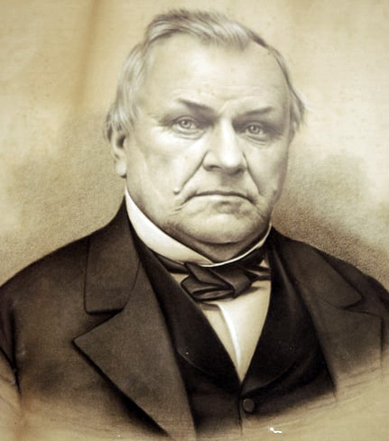
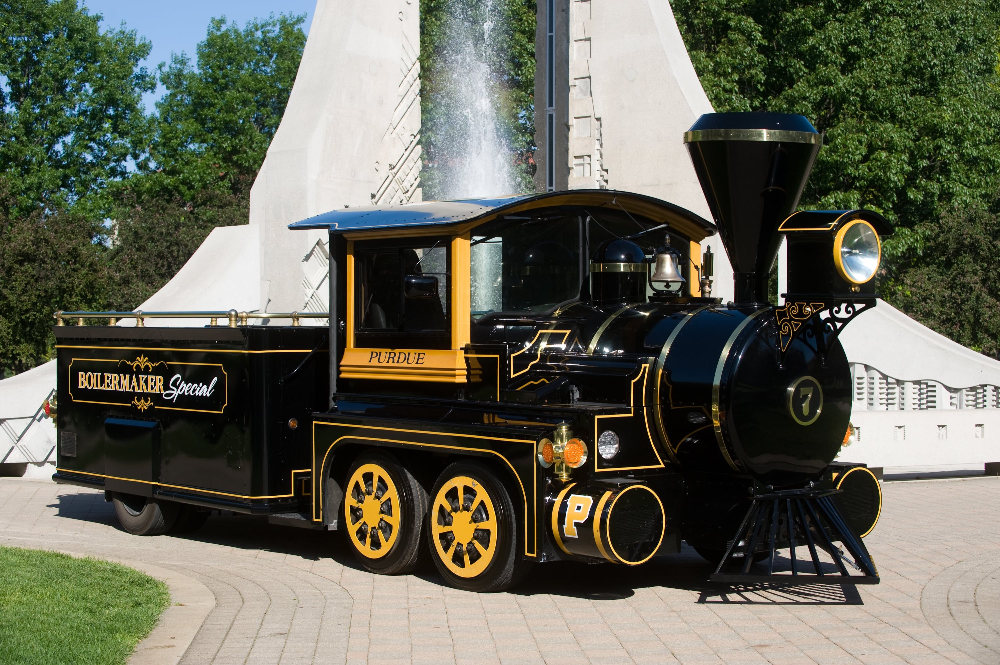

Founding
Purdue University was founded in 1869 by the Indiana General Assembly. It was named after its primary benefactor, John Purdue. Purdue donated $150,000 and 100 acres of towards the creation of the University that would take on his namesake.
Computer Science History
Purdue University established the first Computer Science Department in the United States in October 1962.
Bell Tower
The current bell tower was constructed in 1995 as a gift from the class of 1948.

Athletics
The Purdue Boilermakers are a part of the Big Ten athletic conference. Purdue's athletic program is fairly unique, as it is not funded via student tuition or subsidized by the university. It is a completely self-sufficent organization.

Mascot
The Boilermaker Special is the official mascot of Purdue Unviersity, not Purdue Pete.
